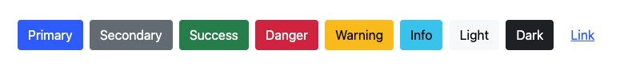
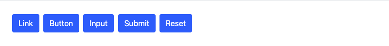
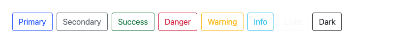
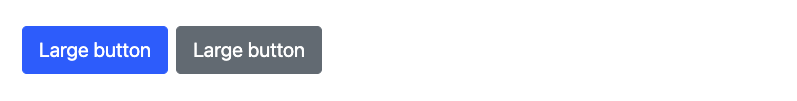
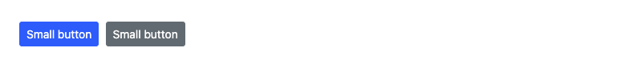

Vous pouvez utiliser les classes de boutons stylisés par Bootstrap pour les actions de formulaires tel que « soumettre », pour ouvrir une boite de dialogue, pour des appels à l’action et même pour des liens vers d’autres pages.
Bootstrap comprend plusieurs styles de boutons prédéfinis, chacun servant son propre objectif sémantique, avec quelques extras ajoutés pour plus de contrôle.
La base: .btn
À la base, les classes .btn sont conçues pour être utilisées avec l'élément <button>.

<button type="button" class="btn btn-primary">Primary</button>
<button type="button" class="btn btn-secondary">Secondary</button>
<button type="button" class="btn btn-success">Success</button>
<button type="button" class="btn btn-danger">Danger</button>
<button type="button" class="btn btn-warning">Warning</button>
<button type="button" class="btn btn-info">Info</button>
<button type="button" class="btn btn-light">Light</button>
<button type="button" class="btn btn-dark">Dark</button>
<button type="button" class="btn btn-link">Link</button>
Balises qui peuvent accueillir .btn
À la base, les classes .btn sont conçues pour être utilisées avec l'élément <button>. Cependant, vous pouvez également utiliser ces classes sur des éléments <a> ou <input>.

<a class="btn btn-primary" href="#" role="button">Link</a>
<button class="btn btn-primary" type="submit">Button</button>
<input class="btn btn-primary" type="button" value="Input">
<input class="btn btn-primary" type="submit" value="Submit">
<input class="btn btn-primary" type="reset" value="Reset">
Style avec contour
Vous avez besoin d'un bouton, mais pas des couleurs d'arrière-plan pleines? Remplacez les classes de modificateur par défaut par .btn-outline-…

<button type="button" class="btn btn-outline-primary">Primary</button>
<button type="button" class="btn btn-outline-secondary">Secondary</button>
<button type="button" class="btn btn-outline-success">Success</button>
<button type="button" class="btn btn-outline-danger">Danger</button>
<button type="button" class="btn btn-outline-warning">Warning</button>
<button type="button" class="btn btn-outline-info">Info</button>
<button type="button" class="btn btn-outline-light">Light</button>
<button type="button" class="btn btn-outline-dark">Dark</button>
Taille des boutons
Envie de boutons plus grands ou plus petits ? Ajoutez .btn-lg ou .btn-sm pour des tailles supplémentaires.

<button type="button" class="btn btn-primary btn-lg">Large button</button>
<button type="button" class="btn btn-secondary btn-lg">Large button</button>

<button type="button" class="btn btn-primary btn-sm">Small button</button>
<button type="button" class="btn btn-secondary btn-sm">Small button</button>
Boutons Bootstrap